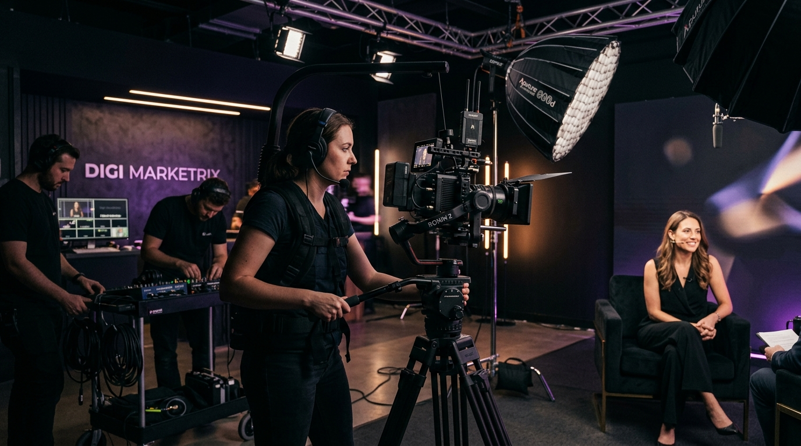
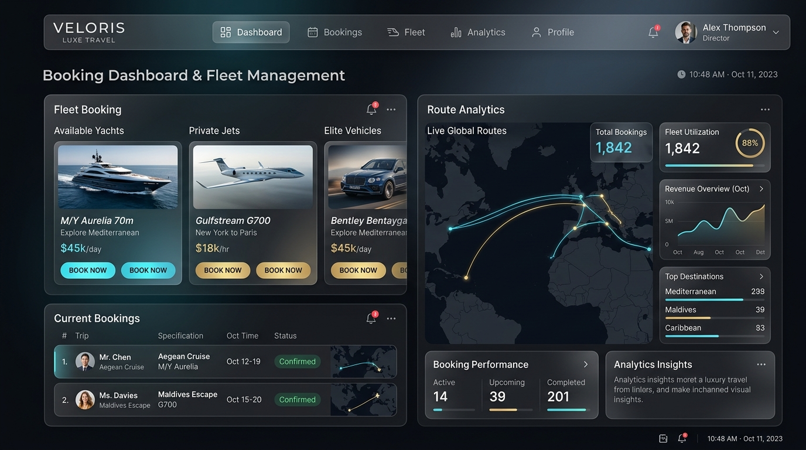
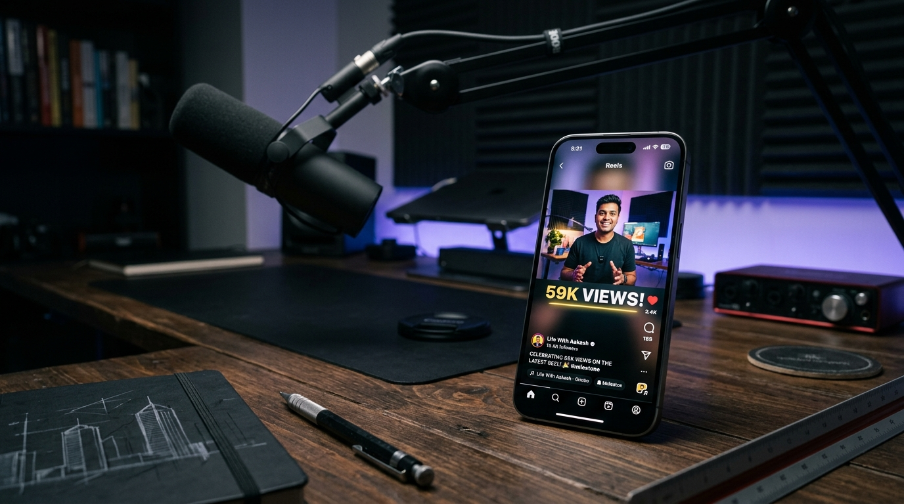
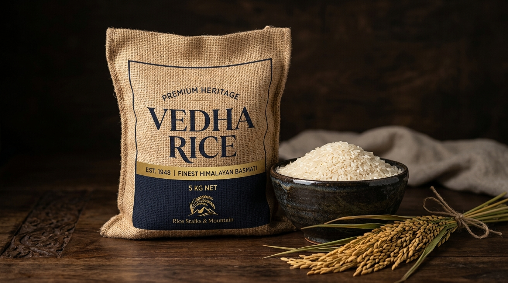

SELECTED WORK.
Case studies in personal branding, commercial video production, web platforms, and digital storytelling. Each project reflects real client deliverables and verified outcomes.
U6NICK
Personal branding and digital content work created for an editorial model, focused on developing a stronger online identity, luxury positioning, and audience connection.

Content strategy, scriptwriting, videography, editing, Instagram management, competitor research, profile optimization, content planning.
The model possessed striking runway appeal and editorial look but lacked a curated digital narrative. Casual social posts diluted perceived exclusivity and casting appeal.
Architected a dark-luxury editorial visual identity. Planned short-form reels focusing on styling nuances and runway breakdowns, accompanied by high-retention cuts and atmospheric color grading.
Executed on-location video shoots, scripted concise hooks, designed the Instagram grid layout, and optimized profile bio into a digital casting card.
Built the profile to approximately 3,000 followers with multiple high-performing reels, higher viewer retention, and improved inbound inquiries.
Published work + verified engagement analytics + direct client feedback confirming strong industry positioning.
DIGI MARKETRIX
Worked across scripting, videography, client shoots, editing, content research and digital marketing for real businesses and personal brands in Tuticorin.

Digital Marketing / Content / Creative Intern (May 1, 2026 — July 1, 2026). Hands-on agency deliverables and client execution.
Local commercial clients needed fast-turnaround video content that maintained cinematic polish, communicated clear offers, and engaged local audiences on social platforms.
Implemented a systematic workflow: concept brainstorm → hook formulation → multi-angle cinema shoot → retention-focused editing with sound design and punchy captions.
Conducted client video shoots, handled camera framing and gimbal work, crafted scripts, and performed fast-paced edits in CapCut and Premiere Pro.
Successfully delivered campaigns for commercial businesses and founder accounts, sharpening practical execution speed and client communication.
Formal internship certificate, delivered client video reels, and client campaign records.
JAYASHAKTHI TOURS & TRAVELS
Designed and engineered the commercial web platform and admin portal for Jayashakthi Tours & Travels, providing fleet booking management and route transparency.

Full web design, UI/UX architecture, frontend engineering, admin dashboard layout, mobile responsiveness, and SEO optimization.
The business was reliant on manual phone calls and offline word-of-mouth. Corporate clients and families lacked a trustworthy digital interface to view available fleet vehicles and submit bookings.
Structured a friction-free booking flow where travelers can browse vehicle categories (sedans, luxury coaches, SUVs), check transparent rates, and initiate reservations in seconds.
Developed a responsive, lightweight web application and integrated an admin control portal for dispatchers to review incoming booking requests.
Production asset deployed and indexed by search engines, capturing direct organic inquiries from travelers.
Live published platform at jayashakthitoursandtravels.com ↗.
CHINNADURAI TEXTILES
Content strategy and scriptwriting for a heritage southern textile brand, translating centuries of handloom craftsmanship into compelling digital authority.

Content strategy, scriptwriting, captions, branding positioning, and competitor research.
Traditional retail sales pitches felt outdated on modern social feeds. The brand needed to captivate younger buyers with the authentic artistry and provenance of artisanal weaves.
Positioned the founder and master weavers as cultural custodians. Authored narrative scripts that opened with intriguing questions and unraveled the technical precision of every thread.
Delivered episodic video script blueprints, hook variations, and social copy designed to maximize retention.
Generated verified milestones of 10K to 15K organic views per video, elevating regional brand prestige.
Documented performance evidence showing 10K–15K view metrics on published scripted content.
SALEMRR BIRIYANI
Cinematic food videography, on-screen video VJ hosting, screenplay, and high-energy commercial brand promotional reel.

Script writing, cinematic videography, screenplay, editing, video VJ hosting, content strategy.
In an overcrowded food market, standard dish photography fails to halt the scroll. The brand needed visceral sensory storytelling that evoked aroma, flavor, and excitement.
Blended energetic on-camera hosting with macro slow-motion captures (sizzling fire, cascading rice) and rhythmic sound design to trigger instant craving.
Directed, shot, and hosted the video on location in the restaurant kitchen, editing the final reel with fast pacing and high sensory impact.
Created a standout commercial sample that drove significant viewer engagement and shares in local food groups.
Published commercial reel showcasing end-to-end creative direction, scriptwriting, and editing.
LIFE WITH AAKASH
Aakash’s personal content creation platform focused on life lessons, mindset, personal growth, self-belief and storytelling.

Creator, on-camera speaker, writer, editor, and audience strategist.
Testing organic short-form algorithms directly on personal narrative content, building an engaged audience from scratch without ad spend.
Iterated through hook structures, relatable student and personal growth dilemmas, authentic spoken-word pacing, and direct emotional connection.
Published 17 episodic motivational reels with consistent framing, subtitles, and reflections.
Achieved a 59K peak viral reel milestone and built an organic base of 453 followers.
Live profile at @life.with_aakash ↗ with 59K peak reel views analytics.
VEDHA RICE
Commercial branding, product positioning, and visual storytelling for a heritage agricultural rice brand.

Brand identity consulting, packaging narrative, commercial photography direction, and digital promotional concepts.
Commodity agricultural staples often suffer from generic packaging that fails to justify premium quality and generational farm provenance.
Created an artisanal brand narrative celebrating traditional paddy cultivation, organic purity, and wholesome kitchen heritage.
Crafted commercial studio visual assets, product copywriting, and packaging label aesthetics emphasizing premium Himalayan purity.
Elevated brand perception from standard wholesale grain to an artisanal culinary staple.
Delivered product branding visual suite, packaging design frameworks, and commercial campaign assets.